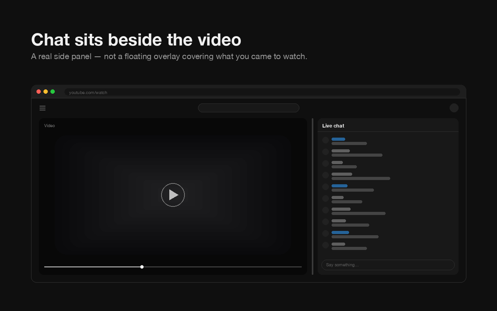
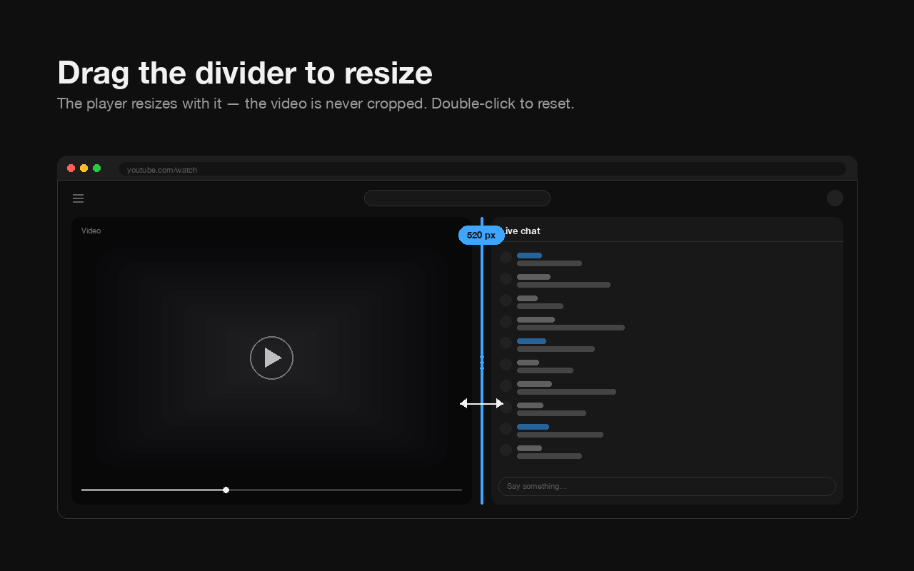
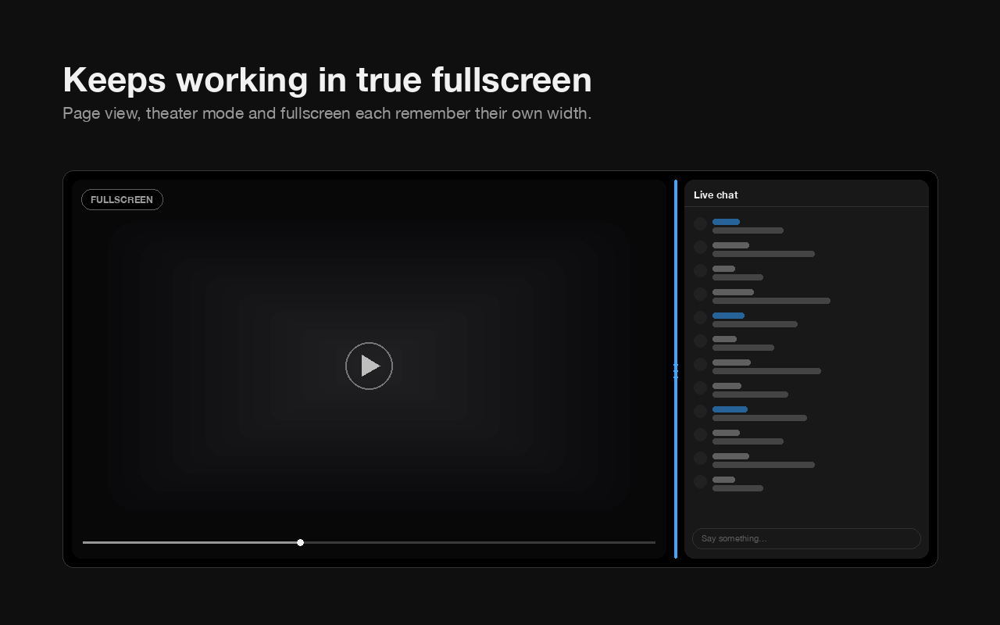
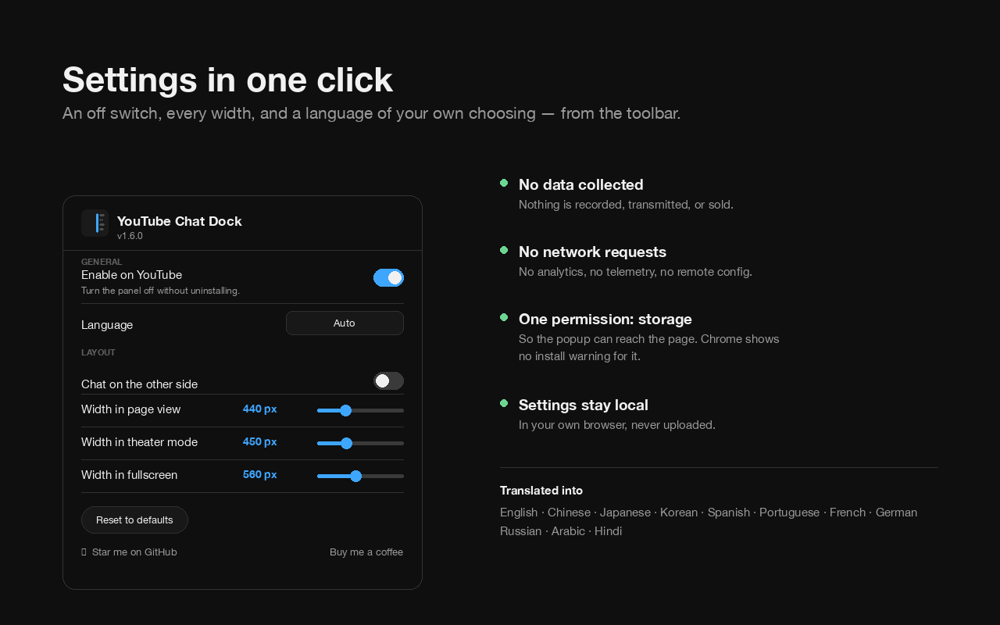

| Extension version | 2.0.2 |
|---|---|
| Price and license | Free and open source under the MIT license |
| Works with | Existing YouTube live chat and chat replay; it does not create chat for videos without it |
| Display modes | Page view, theater mode and true fullscreen, with a saved width for each |
| Minimum viewport | 1000 CSS pixels wide to use the divider; chat widths start at 120 CSS pixels and depend on available space |
Recorded demonstration. See the FAQ for setup requirements and limitations.

How do I put YouTube live chat next to the video?
Install YouTube Chat Dock from the Chrome Web Store, reload YouTube, and open a live stream with chat or a video with chat replay. On a desktop viewport at least 1000 CSS pixels wide, drag the divider to resize the existing chat beside the video.
YouTube Chat Dock re-lays out the chat that is already on the page, so it stays YouTube’s own chat with YouTube’s own features — Super Chat, emotes, moderation tools, member badges. Nothing is re-implemented and nothing is proxied. What changes is where the chat sits and how wide it is.
Can I resize YouTube’s live chat?
Yes, by dragging the divider between the video and the chat. Page view, theater mode and fullscreen each remember their own width, so going fullscreen does not undo your layout.
- Drag the divider to resize, starting at 120 CSS pixels; the maximum depends on available viewport space.
- Double-click the divider to restore the default width.
- Focus the divider and use the arrow keys — Shift for bigger steps, Home and End for the limits.
- Hover the divider and click the side toggle, or use the toolbar popup, to switch sides. Your choice is saved.
- Or use the sliders in the toolbar popup, which preview live as you drag.

Why can’t I resize the chat in YouTube’s theater mode?
YouTube controls the native theater-mode chat width. YouTube Chat Dock adds a draggable divider so you can adjust that width and resize the player alongside it. The divider requires a viewport at least 1000 CSS pixels wide.
YouTube used to behave differently here. It narrowed the player to reserve a side column, then left that column empty and dropped chat below the video — which is where the complaint about chat going underneath the video in theater mode came from. That was measured identical with this extension enabled and disabled, so it was never damage an extension was doing. YouTube has since changed it: measured at 1920×769 on two live streams and a chat replay, the chat is pinned beside the player and stays there while you scroll, so the recommended videos scroll past underneath it. This extension follows the current layout and changes nothing about it except the width.
Does live chat work in fullscreen on YouTube?
YouTube Chat Dock keeps existing YouTube live chat and chat replay beside the video in true fullscreen. Drag the divider to adjust the chat width; the player resizes to fit without cropping the video. Fullscreen remembers its own width.
Step-by-step guide: How to keep YouTube live chat beside the video in fullscreen

Does this work with chat replay on old streams?
Yes. YouTube Chat Dock docks and resizes chat replay on past live streams that already have replay available. It does not restore missing or disabled chat replay.
Why does YouTube’s chat replay go blank in fullscreen?
A stalled YouTube replay can leave chat blank after a fullscreen switch, even without extensions. YouTube Chat Dock detects this specific stall and reselects the current chat mode to restart replay. It is not a fix for every blank-chat or network problem.
Measured on a stalled replay: the message list holds a single item — YouTube’s own “Live chat replay is on” notice — while the panel is the right size, fully visible, and the video plays normally, so nothing looks broken from the outside. Reloading the chat frame does not fix it, because that frame is holding a dead token. Picking a mode in the chat header does, because YouTube fetches a fresh one and rebuilds the list. The extension re-picks the mode that is already selected, so Top chat replay stays Top chat replay, and it can be switched off in the popup.
Can I move YouTube chat to the left side?
Yes. Hover the divider and click the side toggle, or use the toolbar popup. YouTube Chat Dock saves your side preference. Version 2.0.2 fixes switching sides in YouTube’s new fixed side-rail page layout, including right-to-left layouts.
What settings does it have?
The toolbar popup has a docking switch, chat-replay fix, pause-on-hover switch, language picker, side toggle, three width sliders and reset. The docking switch controls the layout and divider; pause-on-hover and replay recovery have independent switches.
| Setting | What it does |
|---|---|
| Enable on YouTube | Turn the panel off without uninstalling |
| Fix blank chat replay | Restarts YouTube’s chat replay when it stalls in fullscreen |
| Language | Any of the 12, independently of your browser’s language |
| Chat on the other side | Same as the divider’s ⇆ toggle |
| Three width sliders | Page view, theater and fullscreen, previewing live as you drag |
| Reset to defaults | Puts everything back |
| Pause chat on hover | Freezes the message list while the mouse is over it |

Does YouTube Chat Dock collect any data?
The extension has no automatic data collection, analytics, telemetry or remote configuration. Settings stay on your device. If you choose to open the external feedback form, its URL includes the extension version and selected interface language; submitting feedback is optional.
- No automatic data collection or sale; optional feedback is submitted separately
- No automatic extension network requests, analytics or telemetry
- No background service worker; nothing runs when you are not on YouTube
- No account, no sign-in, no cloud sync
- No host permissions — it acts on
youtube.comand nowhere else - One permission,
storage, for which Chrome shows no install prompt
The single storage permission exists for exactly one reason: the settings popup is a separate extension page and cannot otherwise reach the tab it is configuring. Full policy: store/PRIVACY.md. The extension uses one stylesheet and four content scripts, plus its toolbar popup. It is MIT licensed and has no runtime dependencies.
Does it work in Edge, Brave, Opera or Arc?
YouTube Chat Dock targets desktop Chrome 105+ and compatible Chromium browsers, including Edge, Brave, Opera, Vivaldi and Arc. Each browser’s current version has not been independently verified. It is not a Firefox add-on.
It is published on the Chrome Web Store, which Edge and the other Chromium browsers can install from directly. It is not a Firefox add-on.
What languages does it support?
Twelve: English, 繁體中文, 简体中文, 日本語, 한국어, Español, Português, Français, Deutsch, Русский, العربية and हिन्दी.
The interface language can be chosen independently of the browser language. Right-to-left layouts are supported.
Are there any limitations?
The divider needs a viewport at least 1000 CSS pixels wide. Clearing YouTube site data removes the first-paint settings copy, but the extension’s local storage can restore it; use Reset to defaults for a deliberate reset.
- Viewport below 1000 CSS pixels. The divider is hidden; page and theater sizing rules require at least this width. Pause-on-hover is independent.
- Local settings. YouTube localStorage supplies the first-paint values; chrome.storage.local can restore them after site data is cleared. Use Reset to defaults in the popup to reset settings.
How do I install it?
Install YouTube Chat Dock from the Chrome Web Store, then reload any open YouTube tab. Open a live stream with chat or a past stream with chat replay, expand chat, and drag the divider. Use a desktop viewport at least 1000 CSS pixels wide.
From the Web Store
Add to Chrome, then reload your YouTube tab. Chrome asks you to approve nothing.
From source
Clone the repo, open chrome://extensions/, turn on Developer mode, click Load unpacked and pick the folder. No build step, no dependencies.
Can I stop the chat scrolling while I read a message?
Yes. Hover the mouse over the message list and it freezes in place, so a fast chat holds still while you read or click a link. New messages keep arriving underneath; move the mouse away and it jumps back to live. It is mouse-only — on a touchscreen there is no hover, so YouTube’s own scroll-up pause still applies. There is a switch for it in the toolbar popup.